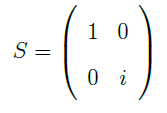
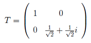
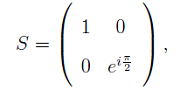
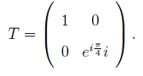
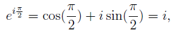
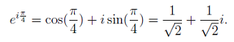

The S and T operators are two operators that define a partial spin around the Z-axis. They are also known as the phase shift operators. The S operator is defined as

and the T operator is defined as

We can make the angle of rotation appear explicitly if we redefine S and T using Euler's relation. In that case

and

Using Euler's relation, we can conclude that the rotation for the Soperator of π / 2 is

and for the T operator with a rotation of π \ 4 is

These operators are unitary but not Hermitian.